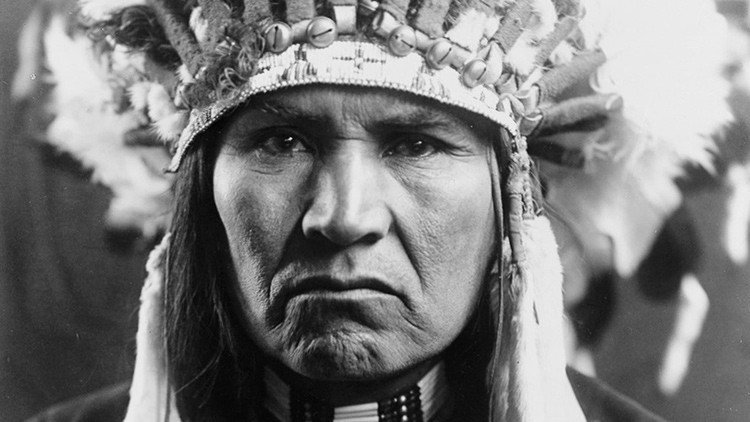
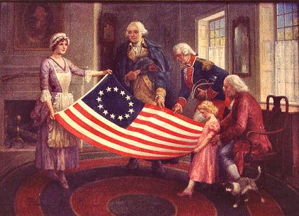
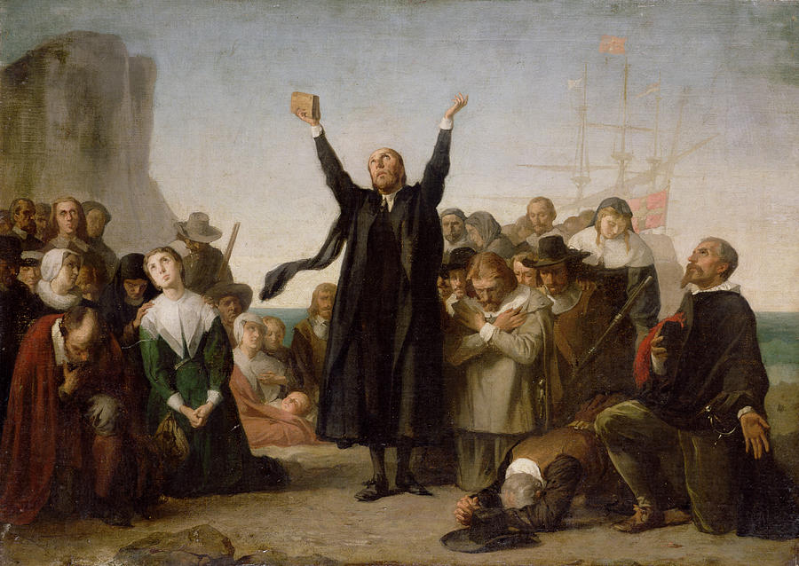
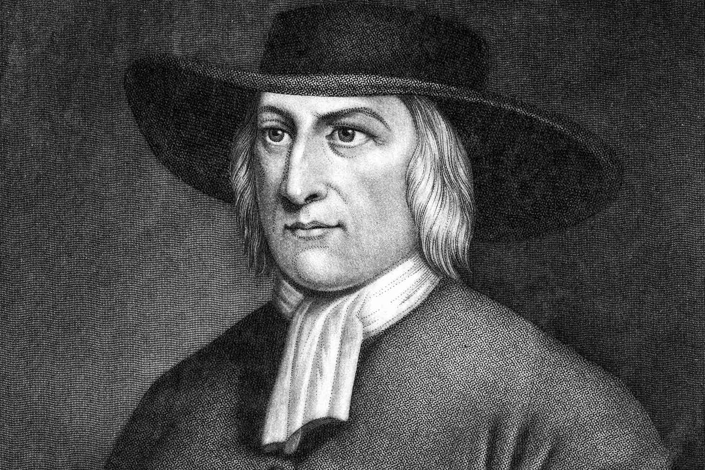
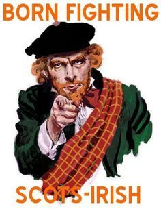

Es un país soberano constituido en una república federal constitucional compuesta por cincuenta estados y un distrito federal. Su capital es Washington D. C. y la ciudad más poblada es Nueva York. La mayor parte del país se ubica en el medio de América del Norte ―donde se encuentran sus 48 estados contiguos y Washington D. C.―, entre los océanos Pacífico y Atlántico. Limita con Canadá al norte y con México al sur. El estado de Alaska está en el noroeste del continente, limita con Canadá al este, separado de Rusia al oeste por el estrecho de BeringEstados unidos se caracterizo por ser un pais abierto a los inmigrantes,hubo un momento donde la inmigracion decayo o fue limitada por el estado,la mas importante de estas limitaciones fue el "acta de inmigracion de 1924" tambien conocida como ley Johnson-Reed,esta prohibia la inmigracion de Asia completamente,siendo la unica excepcion Filipinas,que esta administrada por EEUU en ese momento,tambien establecieron cuotas para los diferentes paises de Europa,favoreciendo a los inmigrantes de Europa Occidental del Norte y Alemania,la inmigracion de paises del sur de Europa como por ejemplo Italia se vio reducida a un 90%,porcentaje similares de reduccion se vieron en Europa del este
El territorio continental estadounidense estuvo habitando por diversos grupos indígenas durante miles de años. Esta población aborigen fue reducida por las enfermedades y la guerra después del primer contacto con los europeos.Estados Unidos fue fundado por trece colonias británicas,a lo largo de la costa atlántica

El 4 de julio de 1776,emitieron la Declaración de Independencia,que proclamó su derecho a la libre autodeterminación y el establecimiento de una unión cooperativa.Los estados rebeldes derrotaron al Imperio británico en la guerra de independencia,el primer conflicto bélico colonial exitoso de carácter independentista

Bandera Actual
Cual fue el grupo o los grupos que poblaron primeramente lo que se convertiria en ese pais?
Esto es obviando a los habitantes indigenas ya que la colonizacion britanica fue distinta a la colonizacion española en el sentido que hubo siempre una marcada diferencia entre colonos y nativos,no hubo nunca una poblacion mestiza considerable ni tampoco mucha influencia cultural,aclarando esto podemos empezar nombrando a una de las tres principales raices estadounidenses ,los puritanos

Esta poblacion era originaria del sur de Inglaterra,principalmente,eran un grupo religioso que se podria calificar como fundamentalista,habian emigrado en un primer momento a Paises Bajos ya que eran discriminados en su pais natal pero por razones principalmente economicas decidieron migrar al "nuevo mundo" estableciendose en la actual Massachusetts en 1620
Al ser un grupo muy religioso hay que tambine tomar en cuenta esta vision y como moldeo el caracter de estos colonos,estos tenian una muy fuerte etica del trabajo,tambien eran moralistas y ponian mucho enfasis en combatir el pecado y tener una vida virtuosa
Otro grupo que moldeo la nacion Americana fueron los Cuaqueros,en la imagen George Fox el fundador de los mismos

Otra de las raices es la de la Escocesa conocidas como los Scotch Irish,su origen esta marcado por el conflicto ya que vivian en el sur de Escocia donde predominaba una cultura individualista y guerrera,estos fueron usasdos por el gobierno britanico para colonizar el norte de Irlanda,alli entraron en conflicto con los nativos irlandeses,al tener una mala relacion con el gobierno britanico y con los nativos empezaron a migrar a America en 1720,durante mas de 50 años aproximadamente 250.000 escoseses irlandeses migraron a America llegando a Filadelfia.A pesar de ser fuertemente protestantes no fueron bien vistos por su caracter independiente que chocaba con la vision mas comunitaria y estatista de la los habitantes del Noreste asi que migragaron a las zonas mas inospitas ,enfrentandose con los indigenas en su migracion al Oeste

Otro de los grupos es el de los Cavaliers,estos provenian de Inglaterra que a diferencia de los otros grupos tenian una vision mucho mas feudal de la sociedad,la primera colonia establecida por los mismos fue en Jamestown ,eran muchos mas clasistas a la tradicion y al orden jerargico